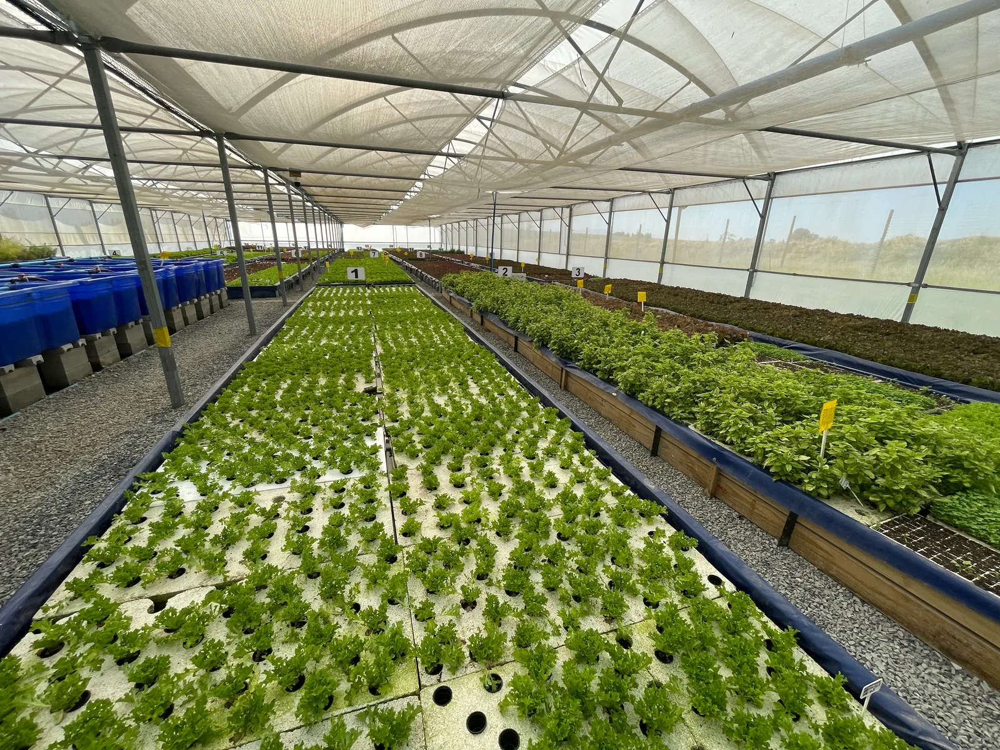

7 min readBorehole & Dam Water Treatment: Managing Iron, Turbidity and Biofilm on Farms
Preventing drip irrigation clogging and pathogen outbreaks: catalytic media filtration, mechanical suspended solids removal, solar pumping, and water reuse.
Read Full Article